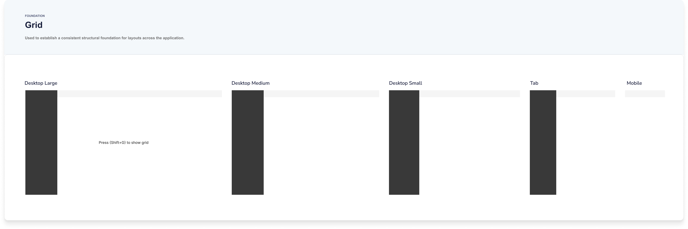
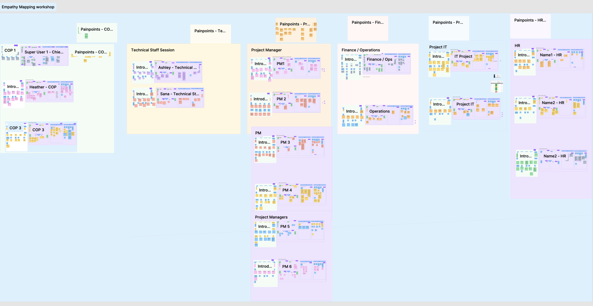
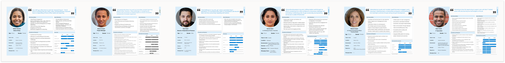
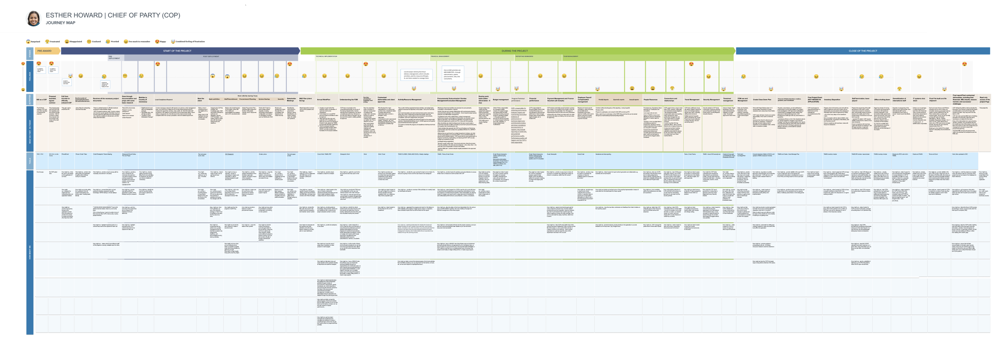
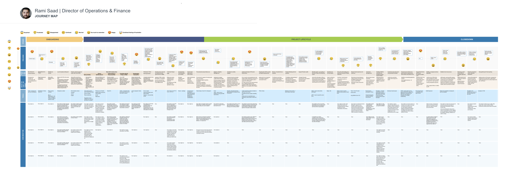
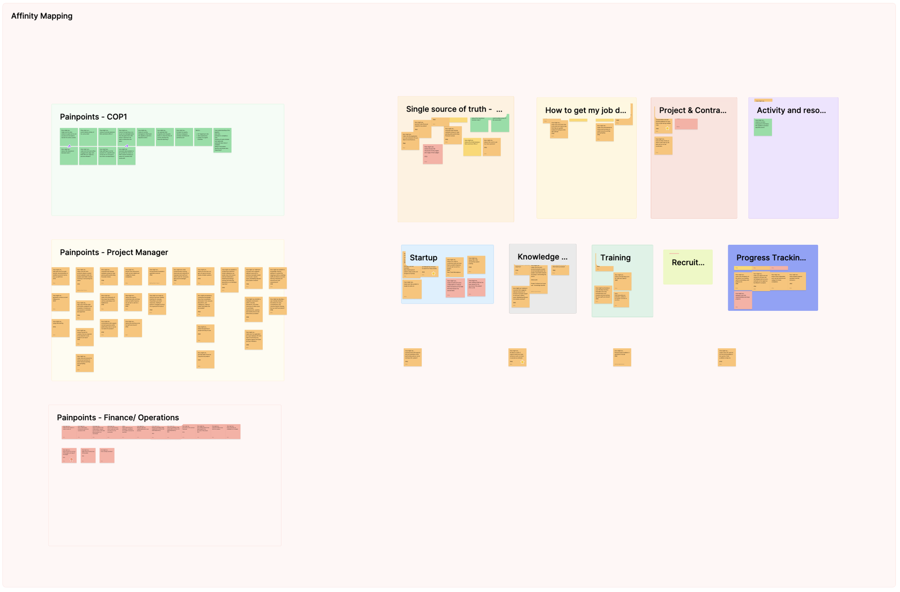

I designed the brand identity, design system, component library, and documentation for Daiverse — DAI's unified platform, built to replace the 10–13 separate tools their teams used across 150+ countries. Every screen in the product was built from this foundation.

DAI is a global development organization that has worked on social and economic projects in over 150 countries since 1970. To get their work done, their teams were using 10–13 different applications — SharePoint, Tammis, Oracle, and a number of internal tools. RCG (now Myridius) brought me on to help build a single, unified platform — Daiverse — to replace them, along with the design system behind it.
Over 90% of DAI's users work on desktop, so we focused there first. Dark mode and mobile were planned for later stages, but I set the system up to support them from the start.
Daiverse never made it to production. In early 2025, USAID was dismantled, and DAI's US operations — which relied on that funding — had to wind down before the application shipped. What's left is the design system itself: a year of work, documented in enough detail to stand on its own.
DAI's brand guidelines — colors, type, charts, and tone of voice — were made for marketing, not software. I started there, adapting them into a foundation that could carry a complex product while staying true to DAI's identity.
I took DAI's main colors and built out a full range of tints and shades for each, coded 50 to 900 — the primitive palette everything draws from. Proxima Nova carried over from the brand, set into a type scale (XXS to 6XL) flexible enough for both dense data tables and large dashboard headers. A 4-point grid governs all the spacing and sizing, and a set of elevation styles keeps depth consistent across cards, modals, and pop-ups.



The system is built on two layers of tokens. Primitive tokens hold the raw values — every exact color and size. Semantic tokens take those values and give them a job: background, text, accent, button state. Components only ever use the semantic layer, so the brand can change underneath without breaking anything built on top.


I only added a component once the design for its feature was final.
It's significantly easier to fill your design system with components you actually need and will use when you have real content and real use casesDan Mall · Design That Scales
DAI had no existing product to learn from — just an outdated marketing site. So I pulled the most-used patterns from their brand and grew the library feature by feature: buttons, navigation, widgets, charts. We started with light mode, with dark mode set up in Figma variables to follow in a later stage.


I documented every token and component the moment it was created — not just what it looked like, but how and when to use it. ZeroHeight became the single source of truth: the designs, the code, and the guidance all in one place.
I worked closely with engineering to translate the components into code, then brought those code snippets back into ZeroHeight, so design and development stayed in sync as the system grew.
Every screen in Daiverse is built entirely from the system. These are first-version screens — a single dashboard replacing the thirteen tools DAI's teams used to juggle, with every bit of spacing, color, and type tracing back to a token.
Note — all data shown is fictional, replaced to satisfy the NDA on this project. Screens are desktop-first, first version.


The system didn't come first — the research did. Before defining a single token, we spent months with DAI's teams to understand the work the platform had to support. Here's the short version:
The workshop outputs behind those six steps — empathy maps, personas, journey maps, and the affinity wall. Open any one to see it full size.





Daiverse never shipped, but the design system is intact. It's a complete, documented body of work — still usable, and ready for whatever it becomes part of next.